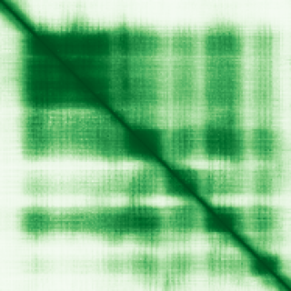

type: protein-evaluation gene: "CENPBD1" date: 2026-06-03 tags: [protein-scout, nuclear-protein, evaluation] status: scored ---
CENPBD1 核蛋白评估报告 (Full Re-evaluation)
1. 基本信息
| 项目 | 内容 |
|---|---|
| 基因名 / 别名 | CENPBD1 / CENPBD1P |
| 蛋白名称 | Putative CENPB DNA-binding domain-containing protein 1 |
| 蛋白大小 | 187 aa / 21.1 kDa |
| UniProt ID | B2RD01 |
| 评估日期 | 2026-06-03 |
2. 评分总览
| 维度 | 得分 | 满分 | 加权后 | 关键证据摘要 |
|---|---|---|---|---|
| 🔴 核定位特异性 | 5/10 | ×4 | 20 | HPA: 暂无HPA定位数据; UniProt: Nucleus |
| 📏 蛋白大小 | 8/10 | ×1 | 8 | 187 aa / 21.1 kDa |
| 🆕 研究新颖性 | 10/10 | ×5 | 50 | PubMed strict=2 篇 (≤20→10) |
| 🏗️ 三维结构 | 6/10 | ×3 | 18 | AlphaFold v6 pLDDT=63.8; PDB: 无 |
| 🧬 调控结构域 | 5/10 | ×2 | 10 | 无注释结构域 |
| 🔗 PPI 网络 | 3/10 | ×3 | 9 | STRING 17 partners; IntAct 0 interactions |
| ➕ 互证加分 | — | max +3 | 0 | PDB+AF+STRING+IntAct cross-validation |
| 原始总分 | 115/180 | |||
| 归一化总分 | 63.9/100 |
3. 详细分析
3.1 核定位证据
| 来源 | 定位 | 可信度 |
|---|---|---|
| Protein Atlas (IF) | 暂无HPA定位数据 | 暂无数据 |
| UniProt | Nucleus | Swiss-Prot/TrEMBL |
IF 图像状态: HPA未检测到可靠IF图像信号（image_status: no_image_detected）。核定位证据基于HPA subcellular localization注释、UniProt注释和GO-CC术语。
GO Cellular Component:
- 无 GO-CC 注释
结论: 核定位证据存在但较为混杂，部分数据源指向非核区室。
3.2 蛋白大小评估
评价: 大小基本合适，可用于常规实验。
3.3 研究现状
| 指标 | 数值 |
|---|---|
| PubMed strict count | 2 |
| PubMed broad count | 2 |
| 别名(未计入scoring) |
关键文献: 1. Evolution of pogo, a separate superfamily of IS630-Tc1-mariner transposons, revealing recurrent domestication events in vertebrates.. *Mob DNA*. PMID: 32742312 2. A prognostic mRNA expression signature of four 16q24.3 genes in radio(chemo)therapy-treated head and neck squamous cell carcinoma (HNSCC).. *Mol Oncol*. PMID: 30259648
评价: 极度新颖，几乎未被系统研究（PubMed ≤20篇）。
3.4 三维结构分析
| 指标 | 数值 |
|---|---|
| AlphaFold 版本 | v6 |
| AlphaFold 平均 pLDDT | 63.8 |
| 高置信度残基 (pLDDT>90) 占比 | 12.3% |
| 置信残基 (pLDDT 70-90) 占比 | 27.3% |
| 中等置信 (pLDDT 50-70) 占比 | 35.3% |
| 低置信 (pLDDT<50) 占比 | 25.1% |
| 有序区域 (pLDDT>70) 占比 | 39.6% |
| 可用 PDB 条目 | 无 |
PAE (Predicted Aligned Error): 
评价: AlphaFold 预测质量有限（pLDDT=63.8），有序残基占 39.6%。
3.5 结构域分析
| 来源 | 结构域 |
|---|---|
| InterPro/Pfam | 无注释结构域 |
染色质调控潜力分析: 结构域注释有限，AlphaFold预测有可辨识折叠域。
3.6 PPI 网络
STRING 预测互作 (combined score >0.4):
| Partner | Combined Score | Experimental | 功能类别 |
|---|---|---|---|
| TIGD6 | 0.000 | 0.000 | — |
| TIGD7 | 0.000 | 0.000 | — |
| SMLR1 | 0.000 | 0.000 | — |
| HUS1B | 0.000 | 0.000 | — |
| HARBI1 | 0.000 | 0.000 | — |
| NAIF1 | 0.000 | 0.000 | — |
| TIGD5 | 0.000 | 0.000 | — |
| TMEM244 | 0.000 | 0.000 | — |
| SPATA33 | 0.000 | 0.000 | — |
| JRK | 0.000 | 0.000 | — |
实验验证互作 (IntAct):
| Partner | 方法 | PMID |
|---|---|---|
| — | — | — |
PPI 互证分析:
- 仅STRING预测
- STRING partners: 17，IntAct interactions: 0
- 调控相关比例: 0 / 17 = 0%
评价: STRING 17 个预测互作，IntAct 0 个实验互作。调控相关配体占比 0%。
3.7 多库互证
| 维度 | 来源 | 结果 | 是否一致 |
|---|---|---|---|
| 三维结构 | AlphaFold pLDDT=63.8 + PDB: 无 | pLDDT=63.8, v6 | 仅预测 |
| 定位 | UniProt + HPA | Nucleus / 暂无HPA定位数据 | 待确认 |
| PPI | STRING + IntAct | 17 + 0 interactions | 数据有限 |
互证加分明细:
- 多库定位一致: +0
- STRING + IntAct 双源验证: +0
- 结构域 + AlphaFold 质量: +0
- PDB 多条目覆盖: +0
总分: +0 / max +3
4. 总体评价
推荐等级: ⭐⭐⭐
核心优势: 1. CENPBD1 — Putative CENPB DNA-binding domain-containing protein 1，极度新颖，几乎未被系统研究（PubMed ≤20篇）。 2. 蛋白大小187 aa，大小基本合适，可用于常规实验。
风险/不确定性: 1. PubMed 2 篇，研究基础极有限，功能注释不完整 2. AlphaFold 预测质量一般（pLDDT=63.8），需要更多实验结构验证
下一步建议:
- [ ] 查阅最新关键文献补充研究背景
- [ ] 获取 Protein Atlas IF 图像确认亚细胞定位
- [ ] 设计体外实验验证核定位及潜在调控功能
5. 数据来源
- UniProt: https://www.uniprot.org/uniprotkb/B2RD01
- Protein Atlas: https://www.proteinatlas.org/search/CENPBD1
- PubMed: https://pubmed.ncbi.nlm.nih.gov/?term=CENPBD1
- AlphaFold: https://alphafold.ebi.ac.uk/entry/B2RD01
- STRING: https://string-db.org/network/9606.ENSP00000
- Data fetched live: 2026-06-03
<!-- DOMAIN_HUMANPPI_REPAIR_START -->
Domain/SMART 与 humanPPI 补充（2026-06-07）
SMART / UniProt domain
| Source | Data | ||
|---|---|---|---|
| UniProt | B2RD01 | ||
| SMART | 未在 UniProt xref 中检出 SMART 条目 | ||
| UniProt Domain [FT] | DOMAIN 13..64; /note="HTH psq-type"; /evidence="ECO:0000255\ | PROSITE-ProRule:PRU00320"; DOMAIN 78..155; /note="HTH CENPB-type"; /evidence="ECO:0000255\ | PROSITE-ProRule:PRU00583" |
| InterPro | IPR009057;IPR006600;IPR007889;IPR036388; | ||
| Pfam | PF04218;PF03221; |
humanPPI / HPA Interaction
Source: 未找到 HPA interaction 页面
未从 HPA Interaction 页面解析到互作伙伴；需人工复核或使用其他 humanPPI 来源。 <!-- DOMAIN_HUMANPPI_REPAIR_END -->